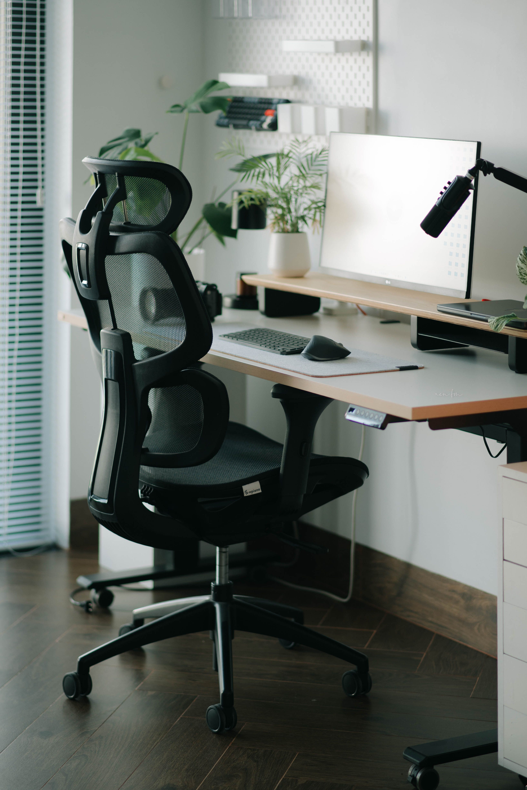

Vertiefung
Lässt man die Arme im Sitzen einfach hängen, ohne Auflage, tragen Nacken- und obere Rückenmuskulatur dauerhaft mit. Hier geht es um die Mechanik dahinter und um konkrete Stellschrauben — Tischhöhe, Armlehne, Monitorposition und Übungen. Jede Aussage ist direkt mit ihrer Quelle verlinkt.

Der Grund liegt in der Anatomie: Schulterblatt und Arm haben nur eine einzige knöcherne Verbindung zum Brustkorb — das Schlüsselbein, das dabei wie eine Distanzstange wirkt. Hängen die Arme unabgestützt, entsteht an dieser Verbindung dauerhafter Zug statt Entlastung, den genau diese beiden Muskeln auffangen müssen.
Quelle: dr-gumpert.de: Musculus trapezius, Praxis Dr. Peter Neef: Verspannungen der Nackenmuskulatur
Der Armschwung beim Gehen ist bei normalem Tempo größtenteils eine passive Pendelbewegung, die allein aus der Dynamik der gekoppelten Körpersegmente entsteht — nicht aus dauerhafter Muskelanspannung. Erst mit steigendem Tempo, etwa beim Joggen, wächst der aktive Muskelanteil, bleibt dabei aber rhythmisch: An- und Entspannung wechseln sich mit jedem Schritt ab. Genau das unterscheidet die Bewegung vom Sitzen mit hängenden Armen, wo Trapezius und Levator scapulae die Arme ohne Unterbrechung statisch halten müssen. Diese Dauerkontraktion drosselt die lokale Durchblutung des Muskels messbar, und mit ihr die Versorgung mit Sauerstoff und die Abfuhr von Stoffwechselprodukten — ein Mechanismus, der bei chronischer Trapezius-Verspannung nachgewiesen wurde. Rhythmische Bewegung wie beim Gehen oder Joggen erzeugt dagegen mit jeder Entspannungsphase wieder Durchblutung, sodass die Muskulatur sich zwischen den Kontraktionen laufend erholen kann.
Quelle: Arm swing in human locomotion (Übersichtsartikel), Larsson et al., Pain (1999): Trapezius-Durchblutung bei chronischer Nackenverspannung
Reicht die Fläche nicht aus, um die Arme längs abzulegen, hilft es, sie stattdessen quer auf den Tisch zu legen — Hauptsache, es gibt überhaupt eine Auflage statt frei hängender Arme.
Quelle: sehen.de: Optimierter Bildschirmarbeitsplatz (DGUV Information 215-410)
Sind die Armlehnen zu breit und zwingen die Arme dadurch in eine Position mit hochgezogenen Schultern, ist es meist besser, sie abzubauen, statt diese Fehlhaltung dauerhaft in Kauf zu nehmen.
Quelle: DGUV Information 215-410, wiepa.com: Ergonomie am Arbeitsplatz
Sitzt der Monitor zu niedrig oder zu weit seitlich, kompensiert das oft dieselbe Nacken- und Schultermuskulatur, die schon durch hängende Arme beansprucht wird.
Trapezius-Dehnung: aufrecht sitzen, Füße flach auf dem Boden, mit der rechten Hand über den Kopf zur linken Schläfe greifen und den Kopf sanft zur rechten Seite ziehen, während die linke Schulter aktiv nach unten-hinten gezogen wird. 20 bis 30 Sekunden halten, dann die Seite wechseln.
Quelle: Zentrum für alternative Schmerztherapie: Oberer Rückenschmerz
Der Titel geht auf die von Dr. James Levine geprägte Redewendung zurück (siehe Hintergrund) — das Buch selbst stammt von Kelly Starrett.
Zum BuchHinweis: Die hier vorgestellten Methoden werden in der Fachwelt kontrovers diskutiert. Die Erwähnung ist ein neutraler Lesetipp, keine Bestätigung der Methode durch PostureShift.
Zum BuchHinzu kommt: Klemm- und Steckkonstruktionen neigen zum Nachschwingen und Wackeln, und viele Modelle passen nur auf Tischdicken zwischen etwa 1 und 8,5 cm. Tisch höherstellen oder die Arme quer statt längs ablegen ist in der Praxis oft die zuverlässigere Lösung.
Eigene Einschätzung — basiert auf allgemeiner Recherche zu Klemm-Tischlösungen und eigener Nutzererfahrung, keine Einzelquelle mit dediziertem Produkttest gefunden.